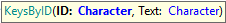
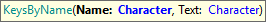
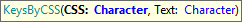
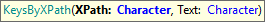

Keystroke commands are used to send single Keys to some UI control, typically to force running some JS events on the webpage after pressing a special key. The list of special characters to use (ie. Enter, Esc, Tab) are documented here. Note: KeysByID Goal: To send keys using ID attribute. Parameters:
Example of use:
&driver.KeysByID("vSUG1", "{BACKSPACE}")
KeysByName Goal: To send keys using the 'name' attribute. Parameters:
Example of use:
&driver.KeysByName("vSUG1", "{TAB}")
KeysByCSS Goal: To send keys using CSS selector. Parameters:
Example of use:
&driver.KeysByCss("#vSUG1", "u")
KeysByXPath Goal: To send keys using an XPath selector. Parameters:
Example of use:
&driver.KeysByXpath("//input[@id='vSUG2']", "{RETURN}")
|